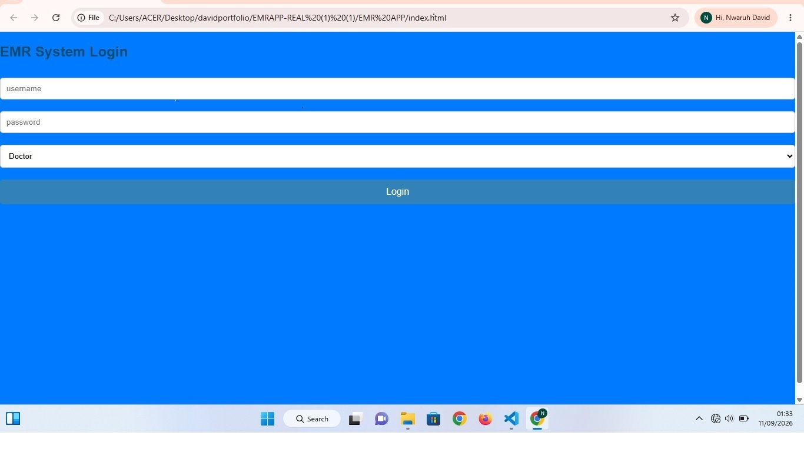
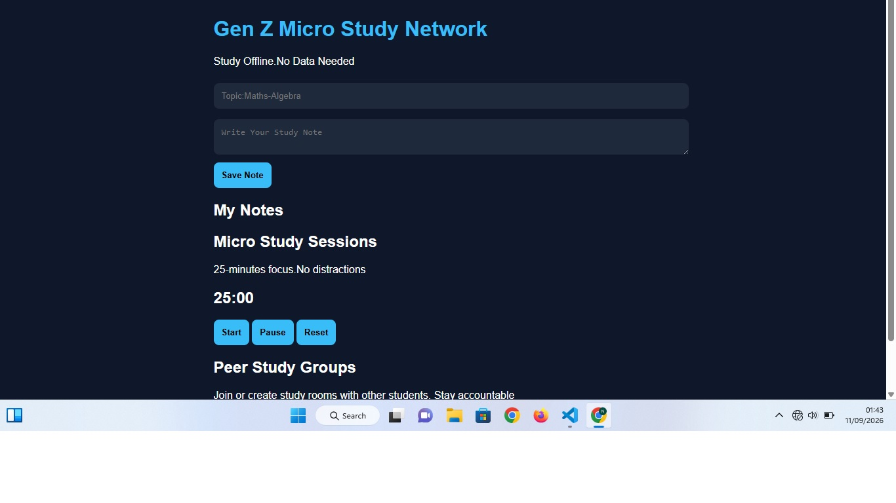

I help people build healthy habits through psychology

Redesign EMR for small clinics works 100% Offline, add patients,vitals,presciptions,syncs when online,
stack:React,Node.js indexedDB

Redesign Study app for Gen Z.join 25-mins focus rooms Share micro-notes track streak-cure loneliness while studying.